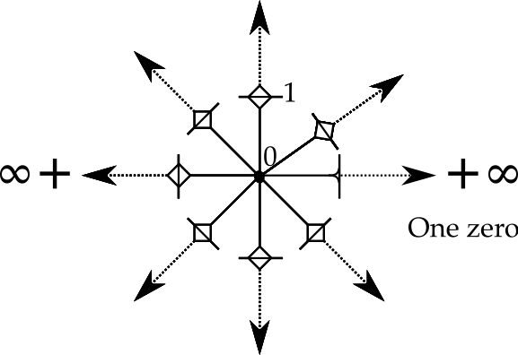

- Quaternions versus Space-time Numbers
The history of the 4D division algebra know as quaternions will be lightly sketched. Are these good enough to describe all the patterns of events in space-time? I will argue that two specific issues dealing with the rules of addition and multiplication require a variation on quaternions I call "space-time numbers." It is simple enough to convert a space-time number into a quaternion (but not the reverse).
** The Multiple Discoveries of Quaternions
A quaternion is a division algebra like the real and complex numbers, but with four degrees of freedom. Gauss was the first to work out the algebra in one of his notebooks. He did not publish the results, possibly thinking they were not interesting enough. Today, most practical physicists do not consider quaternions to be worthy of much study.
Rodrigues figured out how to use quaternions to do rotations in three dimensional space. There are several technical reasons why rotations should always be done with quaternions instead of Euler angles, but I will skip a detailed discussion of that subject. Rotations in 3D space remain the one-trick-pony use of quaternions by both rocket scientists and game designers.
Hamilton spent a decade trying to figure out a consistent set of rule to add, subtract, multiply and divide triplets of numbers. The first three are easy, but making sure division always works cannot be done with triplets. Hamilton realized on a walk with his wife that a fourth number was required, leading to a famous bit of vandalism as he carved the rules onto a bridge. The "fourness" of this new number was such a jump for Hamilton that he included it in the name itself, the quaternions. Hamilton was so adverse to the 4D nature of quaternions that the day after his discovery, he created the "pure quaternion" where the first term was zero. I have not become a scholar of his efforts since many of his contemporaries where unable to understand his written works.
The rules of quaternion algebra are simple and should be familiar to those who have worked with complex numbers and vector algebra. A quaternion is a four dimensional vector space over the real numbers. This means they can be added, subtracted, or multiplied by a scalar. Care must be used to not call a quaternion a 4-vector, a term that appears in differential geometry that brings tangent and cotangent spaces into play. As a vector space over the real numbers, quaternions are a group with the addition operator. The identity element is zero.
To handle the multiplication operator, one needs a few rules:

One can make different choices for the signs, but this is the set that Hamilton used. For use in symbolic math packages, I have found the 4x4 real matrix representation is useful:
The matrix representation has the rules of multiplication built in. Because it is a matrix, it also has addition and what is necessary to invert the matrix. The inverse of this matrix is the transpose of the matrix which always necessarily exists divided by the norm of the matrix which is the sum of the squares of each real-valued term.
Technical note: I define the norm as the product of a quaternion with its conjugate:
Notice the 3 zeroes. What is usually done is not include the three zeroes. They matter to me for two reasons. First, the product of two quaternions is necessarily another quaternion. This is obvious when one does programming since the data structure stays the same. Second, much of calculus is the study of change near interesting points. There may be times one want to study say q*(q+da), then nothing needs to be modified. [end note]
The norm will only equal zero for the zero quaternion. Therefore a multiplicative inverse will exist in all cases except for zero, just as is the case for the real and imaginary numbers.
For completeness, it should be noted that a quaternion can also be represented by a 2x2 matrix with complex values. In my own experience with Mathematica, the complex representation led to odd results.
A quaternion can be viewed as a Clifford algebra, specifically Cl0, 2(R). Clifford algebras are also know as geometric algebra based on a modern outreach effort by David Hestenes using the term Clifford did as being more descriptive. That goal is to have a big tent of algebras, picking the one that best fits the job at hand. This is different from my own research work which is to find one structure that is powerful enough to do it all as Nature does it all. The real and complex numbers are Cl0, 0(R) and Cl0, 1(R) respectively. Both the real and complex numbers are subgroups of quaternions. The real numbers are the diagonal of the matrix representation. There are three complex numbers in every equations: the diagonal plus any of the other three terms. One could also lump all three imaginary numbers together and the result is a complex number. Multiplication for real and complex numbers commutes, so they are both mathematical fields. The sum of these parts, the quaternions, by contrast is not a mathematical field because the order of multiplication matters to the cross product terms found in a quaternion.
A quaternion with a norm of one is a way to represent the group SU(2), also known as a unit quaternion. A unit quaternion sits in the middle of the standard model, U(1)xSU(2)xSU(3). It remains an open riddle why the standard model has these three particular Lie groups. As is well-known, once you have SU(2), then U(1) is necessarily a subgroup of SU(2). It makes me speculate that a new approach to these symmetries might manage their natural overlap in a more compact way. Until such an idea can be made more precise, consider this an odd partial physics fantasy.
** Concerns About Quaternions
Full disclosure: I own the domain quaternions.com whose tagline in "Doing Physics with Quaternions." There are books and articles in the literature that claim that complex-valued quaternions are needed to derive the Maxwell equations or represent the Lorentz group. I can understand why one would have no interest in using quaternions given such limitations. Those are show stoppers. Yet I have succeeded in both cases with real-valued quaternions (and the answers are not that difficult once you know that an answer does exist). It is reasonable to suspect I am a zealot on the subject. I prefer to promote logical consistency. Nature uses one set of rules, so why don't physicists? Real and complex numbers come with enough mathematical structure to do calculus. Yet they are too small to work directly in classical three dimensional space without additional background mathematical structure, namely a vector space. Even that is not enough since there is no means to handle angular momentum. Quaternions can handle three classical dimensions, including the rotation. This should be an obvious point, but it is not.
Science is an art of reductionism. The real numbers appear to be too complicated as a starting point. Addition utilizes the real number line which is the fusion of the positive real numbers, then zero, then the negative real numbers. I appreciate how practical this is. Yet I see two sets of positive real numbers. One set is labeled "positive", the other "negative", but otherwise they are the same. The rule of multiplication can be found in the Abelian sign group Z2. This opens up the reductionist question about the trivial group Z1.
Using zero and one, there are three ways to represent the trivial group Z1.
(+, {0}) (*, {0}) (*, {1})
I found this interesting enough to devote an entire blog to the subject. The first two look like together they could form a mathematical field. There is a rule in the definition that disqualifies that because the trivial group cannot be changed. To me that is interesting, a logical contrast to calculus. Only the third representation of the trivial group can be used to form a continuous group. Only the third group can be used to form the positive and the negative real numbers. If one starts from the real numbers, then zero and one are just different points on the same line. Starting with the trivial group gives zero and one a more nuanced relationship.
Quaternions as a vector space over four real numbers have four zeroes. For events in space-time, I call zero "here-now". Every observer should have but one here-now, not four.
A star topology allows there to be one zero share among eight unities:

The origin is now quite complicated. In one area of study, relativistic quantum field theory, there is a notion of the sum of all possible histories. The odds of a series of events for particles going forward in time have to be added to the events going backwards in time with the antiparticles. A star topology might allow for such a seemingly crazy pattern of paths.
The rules for multiplication should come straight from group theory. The quaternion group Q8 has the right name for the job. What is off-putting is the "eight", twice as big as Hamilton's revered four. Write out the product table for the quaternion group Q8:
Although it might look like a square matrix, a product table is not equivalent to a matrix. Let me make the difference concrete. Square the simple quaternions which is also a complex number (1, 2, 0, 0) to generate (-3, 4, 0, 0). Using the product table, one starts with 1 I0 + 2 i1. and ends with 1 I0 + 4 I2 + 4 I1. It is also true that 1 I0 + 4 I2 = 3 I2. There is an equivalence relationship between working with the quaternion group Q8 and Hamilton's 4D quaternions. To be equivalent, one needs to reduce the Q8 result. Reducing means to calculate the differences between the additive pairs (I0, I2), (i1, i3), (j1, j3), and (k1, k3). so that one or possibly both are zero.
** Space-time Numbers
The needs of relativistic quantum field theory appear to require a new type of
number, one that is a technical variation on Hamilton's 4D quaternions. I will
call these numbers space-time numbers. The sets of positive real numbers
labeled I0, i1, j1, and k1 each
have additive inverses, I2, i3, j3, and
k3 respectively. The discrete zero set {0} separates the two sides.
Together, these four real lines - (I0, {0}, I2),
(i1, {0}, i3), (j1, {0}, j3), and
(k1, {0}, k3) - meet together at zero to form a star
topology. Products are formed for space-time numbers using the product table of
the quaternion group Q8.
** Nomenclature
How should one write a space-time number? This is a minor challenge since we are all trained from the earliest days to use minus signs. My proposal is to use something I call doublet notation. We know two minus five is minus three. In the world of real numbers, that is just:
2 - 5 = -3
For doublet notation, we have places to store the two and the additive inverse of five:
(2, 0) + (0, 5) = (2, 5)
So where is the three? That is obtained by reducing this doublet. That means taking the difference between the two positions and letting the bigger one win like so:
(2, 5) = (0, 3)
When doing problems with algebra, it is often the case that one does not know what the sign is. In that case, the convention will be to keep the parentheses but drop the comma:
(3, 0) + (x) = (0, 4)
If one then goes and solves for x, the value is (0, 7). The only time one can skip the parentheses is for zero. For example, here is a norm as a quaternion and as a space-time number:
q: (1, 2, 3, 4) * (1, -2, -3, -4) = (29, 0, 0, 0)
stn: ((1, 0), (2, 0), (3, 0), (4, 0)) * (1, 0), (0, 2), (0, 3), (0, 4)) = ((29, 0), 0, 0, 0)
The space-time number norm comes in a reduced form.
** Why Bother?
Classical mechanics, classical quantum mechanics, and relativistic quantum field theory all have their own examples of simple harmonic motion. This is the equation that governs classical simple harmonic motion:
Space is treated like a pure quaternion as Hamilton preferred. The operator is a pure scalar. Space and time do not mix as operators. This is the sign that the equation is classical. In classical quantum mechanics such as the Schrödinger equation, one time derivative and two spatial derivatives act on the same wave function. In relativistic quantum field theory such as the Klein-Gordon equation, second order space and time derivatives act on the same wave function.
Operators are extremely efficient means for describing patterns of numbers. Since operators are a summary tool, one would hope the same pattern could be seen in the numbers themselves. Perhaps problems in classical physics always use the reduced form of space-time numbers. There is no possibility of ambiguity about where a mass is in classical physics. In classical quantum mechanics, the time portion may well remain in the reduced form, while the spatial terms are not reduced, having non-zero values in a position and its additive inverse. In relativistic quantum field theory, it may be that all eight numbers are non-zero, a means to represent particles going forward in time and their antiparticles going backwards in time.
** Enormous Remaining Tasks for Space-time Numbers
The definition of a derivative has long been established for both real and complex numbers. Since both of those numbers are subgroups of space-time numbers, they will apply when a space-time number is of that form. The more general definition of a derivative for a quaternion and these proposed space-time numbers continues to be an area of study in mathematics. The reason for the problem is that it is not obvious how to deal with the fact that the differential element does not commute in the limit definition. The differential element could go on the left or the right but the results are different. Some work with left-hand derivatives, but this approach appears to fail since one cannot show that a simple polynomial like q2 is analytic in q.
My own assessment is that mathematicians are trying to make baby steps away from the familiar limit definition. Instead, one should use lessons found in relativistic quantum field theory as a guide knowing the far more simple case for the derivative of real number derivatives is there when all the other complicated makes no contribution.
These are my own preliminary efforts on this subject.